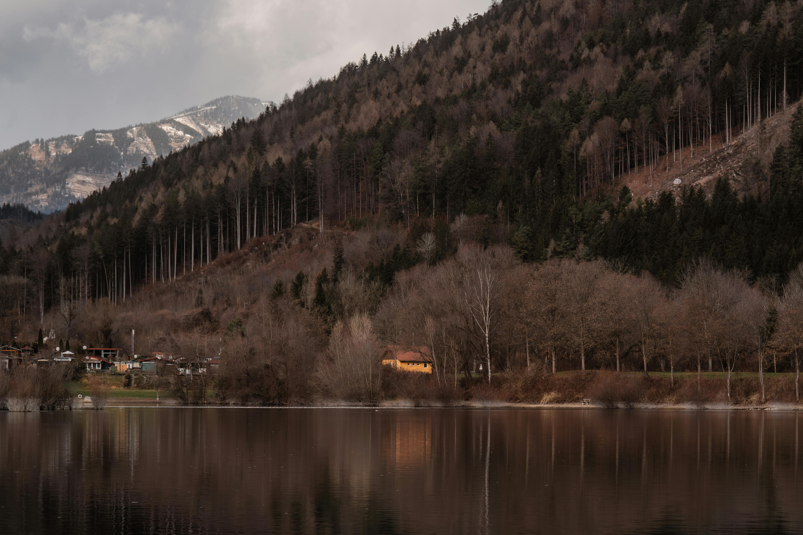
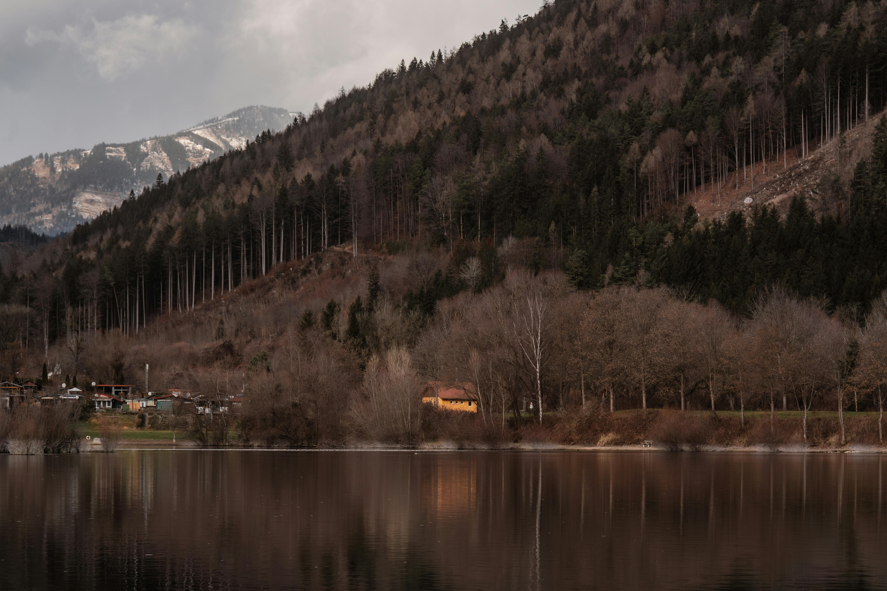

What is Lumine?
Lumine is a Linux distribution which is based on Debian 12 (Bookworm) and focuses on stability, polish, practicality and most importantly Gaming rather than hype. Lumine supports pretty much every normal way people install games. From Steam to CDs, from .exe to .msi
Verified Gaming Lab
Native performance benchmarks on the latest Lumine
(Tested on an i3-3240 + 8gb-Ram + GT740-4gb rig)
Core Characteristics
- Base: Debian 12 (Bookworm). Rock-solid, long-term stability with non-free-firmware enabled.
- Desktop Environment: Budgie-Desktop (Wayland-ready, but uses X11). Clean layout, familiar workflow for Windows users.
- Visual Design: Catppuccin Mocha theme. Consistent dark UI with soft contrast.
- Boot & Polish: Custom Plymouth boot screen. Optimized initramfs.
Gaming Ready
Lumine is configured so gaming works out of the box.
- Steam & Proton: Pre-installed and configured with 32-bit libraries.
- Graphics: Mesa drivers and Vulkan tools installed by default.
- Non-Steam Games: Full Wine support for Heroic and Lutris launchers.
System Requirements
Minimum
Basic desktop functionality
Recommended
Smooth multitasking experience
Professional
High-end performance & FPS
Verify Compatibility
Lumine leverages Proton and Wine to run Windows titles. Before installing Lumine why don't you check it out if your favorite title supports us?
GitHub Momentum
Total Downloads
Fuel the Project
Supporters
Lumine OS is:
- Stable
- Clean
- Gaming-capable
- Minimal
- Debian-powered
Lumine OS is not:
- Bloated
- Experimental
- Rolling-release chaos
- Locked-down
Download & Support
Current Release: v1.0 (Flamingos)
Lumine is free, but support helps keep the project alive. You can pay what you want on Ko-fi before/after download (Or just press the download button).
Become a Lumine Tester
Hardware diversity is the biggest challenge in low-level development. We need your help to verify kernel stability and frame timings on different setups.
Report a Bug
Found a kernel panic or a broken driver? Open an issue on GitHub for our low-level triage.
Open Issue →Benchmark Logs
Share your mangohud logs to help us optimize scheduling and frame timings.